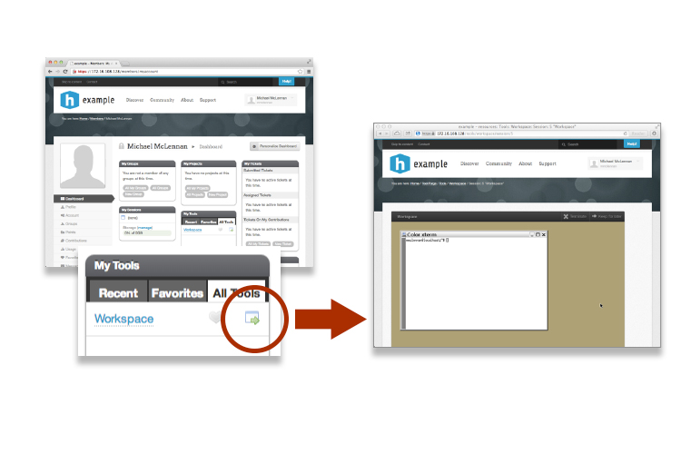
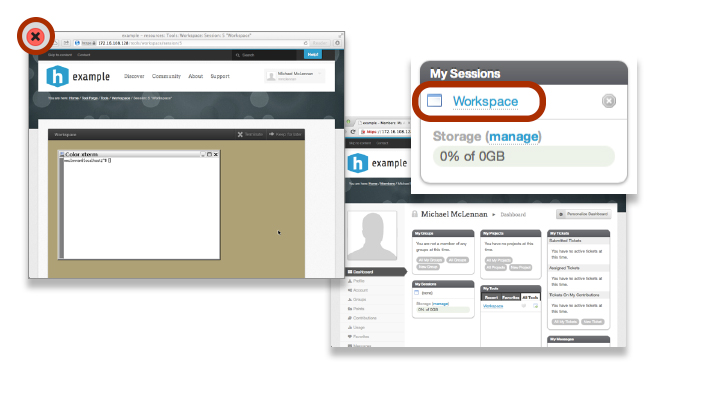

Launching workspaces

What is a Workspace?

- Full-featured Linux desktop
- For tool developers
- For researchers
- Accessible from any web browser
- Still running after you close your browser
- Access to computational clusters
- File storage provided by the hub
Accessing running workspaces
If you close the browser, your session is still running. Access it from "My Sessions" module on the My Hub page.
